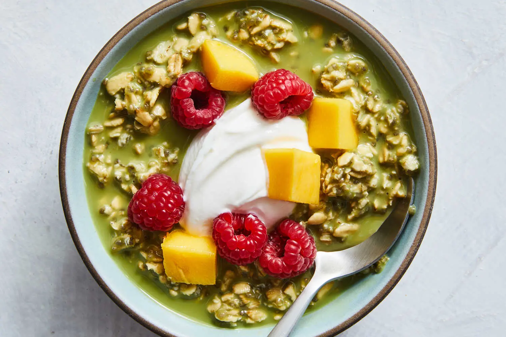

Matcha Overnight Oats

Description
Oats and a matcha latte make a wonderful breakfast pairing, but this recipe goes one step further to combine them into matcha overnight oats, an effortless breakfast that will delight lovers of efficiency and morning matcha. For vibrantly colored oats and a strong matcha flavor, whisk the oat mixture with a full teaspoon of matcha powder, but feel free to decrease that amount for a more delicate flavor or lower caffeine level. Refrigerate the oat base at least 3 hours to thicken (or overnight), then adjust the desired thickness to taste, adding more milk to thin as desired. To serve, top with thick, creamy Greek yogurt and vibrant fruits of choice, like raspberries, mangoes and blueberries.
Ingredients
Yield: 4 servings
- 2 cups oat milk or milk of choice (plus more for serving, if desired)
- 7 teaspoons maple syrup
- 1 teaspoon unsweetened high-quality matcha powder
- ¼ teaspoon vanilla extract
- 1 cup/95 grams rolled oats
- 2 tablespoons chia seeds
- Vanilla Greek yogurt and fruit, for serving
Steps
- In a lidded quart container or other similar vessel, whisk the milk, maple syrup, sifted matcha powder and vanilla together until smooth and no matcha lumps remain. Stir in the oats and chia seeds until thoroughly combined.
- Cover the mixture and store in the fridge at least 3 hours or overnight.
- Mix to combine thoroughly before serving, and thin to taste with more milk, if desired. Top with yogurt and fruit. The oats can last, covered and refrigerated, for 3 to 4 days.
Home